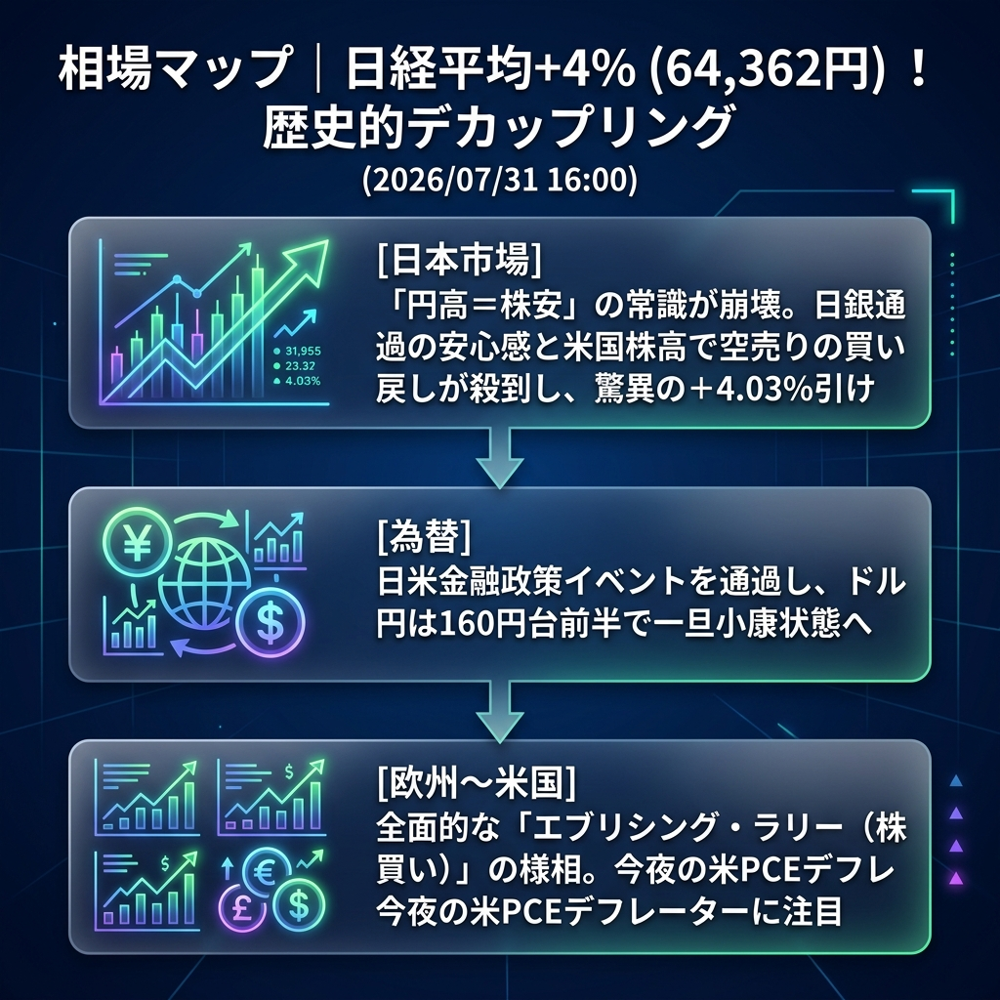

まさに歴史に残る1日となりました。日経平均は「円高＝株安」という絶対的な常識をへし折り、前日比+4.03%（64,362円）という歴史的な大暴騰で大引けを迎えました。
この背景にあるのは、昨晩の米国市場で起きた「ゴルディロックス相場の再来（メガテックの爆上げ）」と、日銀イベントを無事に通過したことによる強烈な安心感です。為替が160円近辺まで円高に振れているにも関わらず、日本株には空売りの買い戻し（ショートスクイーズ）と新規の買いが殺到し、異例のデカップリング相場となっています。
「日経平均+4%超の歴史的デカップリング」と「グローバルなエブリシング・ラリーの様相」。
午後の東京市場は、利益確定売りに押される場面すらほとんどなく、引けにかけて一段と買い上げられる「踏み上げ相場」の様相を呈しました。CME日経先物も64,000円台に乗せています。
ドル円は160円台前半で一旦下げ止まっており、極端なボラティリティは収まりつつありますが、今夜の米PCE（個人消費支出）デフレーターの発表を前に、不気味な静けさを保っています。
| 指数・銘柄 | 現在値 | 前回比（前日比） | 騰落率 | 確認事項 |
|---|---|---|---|---|
| S&P 500 (ES=F) | 7,505.50 | +32.00 | +0.44% | 時間外でも続伸 |
| Nasdaq (NQ=F) | 28,539.50 | +177.75 | +1.07% | ハイテク株への資金流入止まらず |
| Dow (YM=F) | 52,631.0 | +228.0 | +0.48% | 全面高の展開 |
| 日経225現物 | 64,362.02 | +2494.59 | +4.03% | 【歴史的暴騰】円高を完全無視 |
| CME日経225先物 | 64,030.0 | +265.0 | +0.48% | 64,000円台へ突入 |
| USD/JPY | 160.059 | +0.334 | +0.28% | 160円台で下げ止まり |
| EUR/USD | 1.1507 | -0.0023 | -0.19% | ドル安一服 |
| 金 | 4,112.8 | -53.3 | -1.15% | リスクオンで資金流出 |
| 原油 | 83.93 | +0.34 | +0.41% | 83ドル台後半で推移 |
| BTCUSD | 63,709.65 | -1157.31 | -1.57% | 利益確定売りが先行 |
日米のビッグイベント（FOMC、日銀）をすべて通過し、今夜はFRBが最も重視するインフレ指標「米PCEデフレーター」の発表が控えています。
欧州勢がこの「日経平均の悪抜けデカップリング暴騰」を本物と見てさらに買い進めるか、それとも「週末の利益確定」を優先するかが焦点です。
今夜の米PCEデフレーターが「予想外に強いインフレ（上振れ）」を示した場合。ゴルディロックス相場の前提（インフレ鈍化と利下げ期待）が崩れ、米国株は一転して急落し、連れ高していた日経先物も63,000円割れへと奈落の底へ叩き落とされるシナリオとなります。